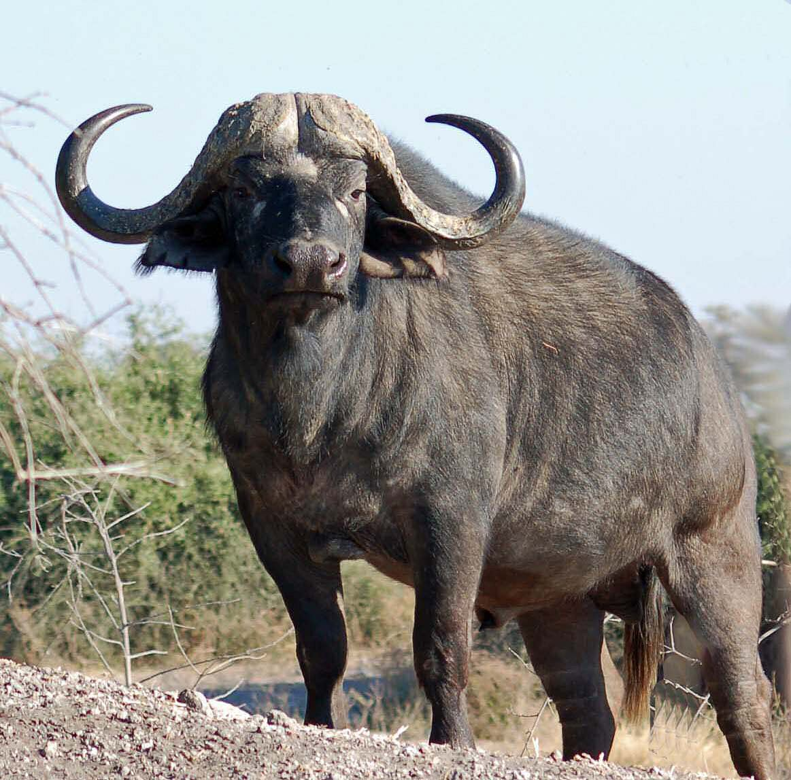
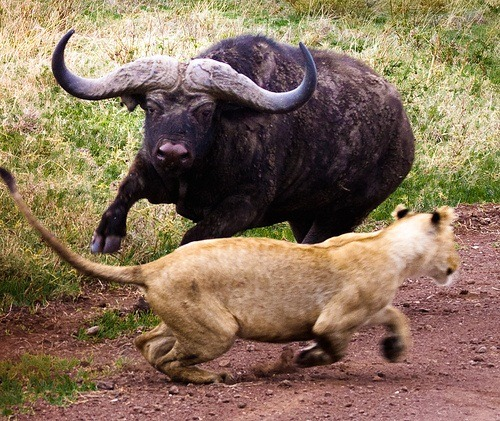
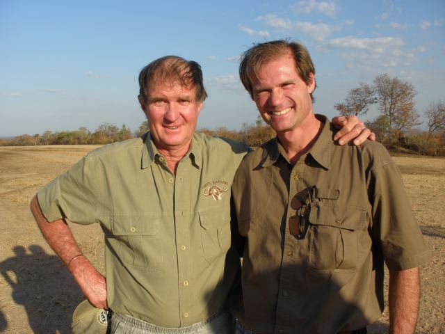

Known by locals as, "The Black Death" or "The Widow Maker", the African Cape Buffalo is one of the most dangerous animals on the continent, earning itself a spot as a member of "The Big Five". Although few would assume the Cape Buffalo to be among the most dangerous animal in Africa, this beast is credited with killing more big game hunters than any other. However, this should not come as a suprise, considering that the buffalo can reach heights of 6ft and weights of nearly a ton. Furthermore, the aggression level of a male buffalo is unparralled, especially when wounded or protecting a calf under attack. Due to this extremely aggressive and unpredictable nature, there have been no succesful attempts at domesticating the Cape Buffalo. However, this animal is a highly sought after trophy for hunters who are willing to pay extreme prices to harvest a mature bull. However, the price to hunt one of these animals may be more than monetary, as the Cape Buffalo gores, and subsequently kills, more than 200 people each year on the Dark Continent.

Cape Buffalo Defends Himself
Although the African Cape Buffalo is credited as being the #1 annual killer of big game hunters in Africa, here are other deadly animals that have earned their spot on Africa's famed "Big Five":
| Big Five Animal: | Elephant | Lion | Cape Buffalo | Rhinoceros | Leopard |
|---|---|---|---|---|---|
| Maximum Speed | 15mph | 50mph | 35mph | 30mph | 36mph |
| Human Deaths Responsible for Each Year | 500 | 100 | 200 | 2 attacks/year | 15 |
One of the most recent stories of a Cape Buffalo attack is that of Mr. Owain Lewis, a 67 year-old British man, who was killed while working as a professional hunter for a safari reserve in the Zambezi Valley of Zimbabwe. While tracking a wounded buffalo, Lewis was taken by surpise, gored, and thrown into the air when the buffalo charged before he was able to react and place a kill shot on the animal. Owain Lewis suffered a broken neck and many broken bones as a result of being violently thrown. It was not until after Mr. Lewis was already deceased that the apprentice hunter accompanying him was able to kill the buffalo.
The Telegraph Article: British hunter killed by buffalo he was trying to shoot

Left: Owain Lewis
If you wish to learn more interesting facts about the African Cape Buffalo, I recommend that you visit: 10 Interesting Facts About the Cape Buffalo.